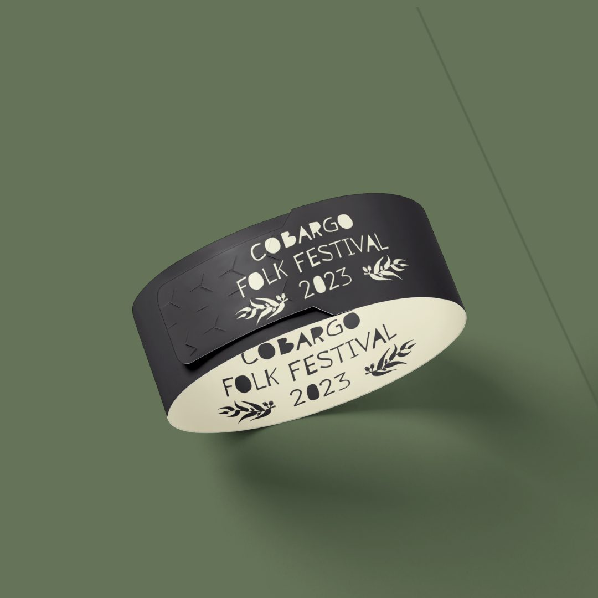
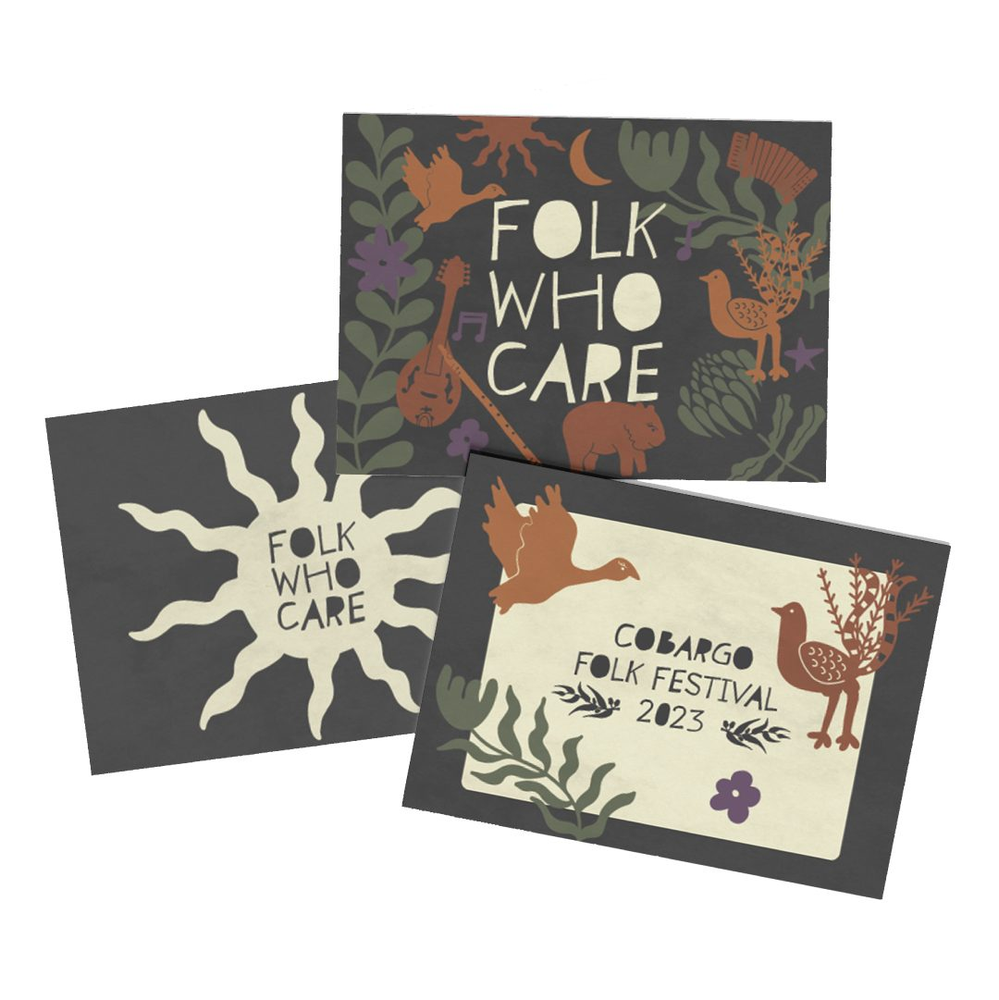
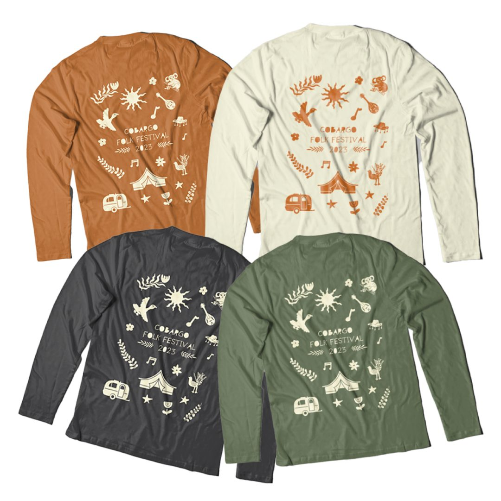
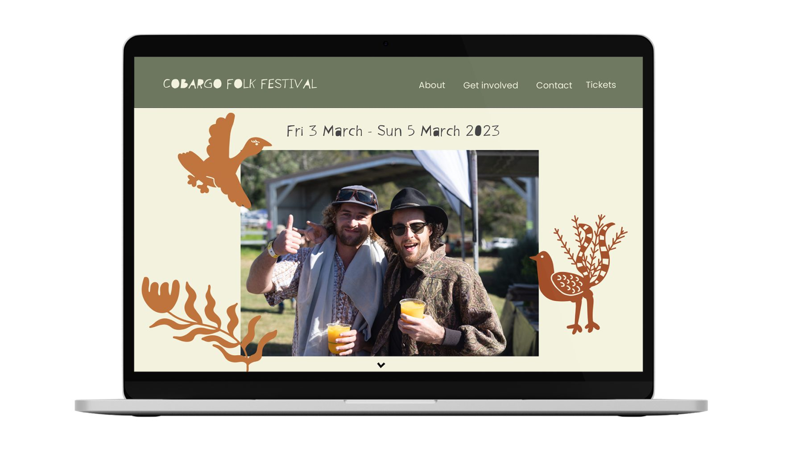
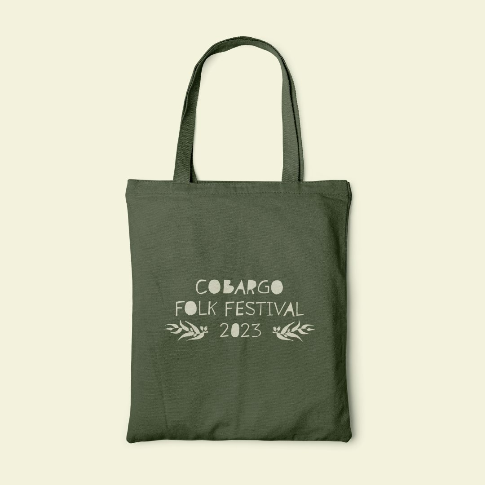
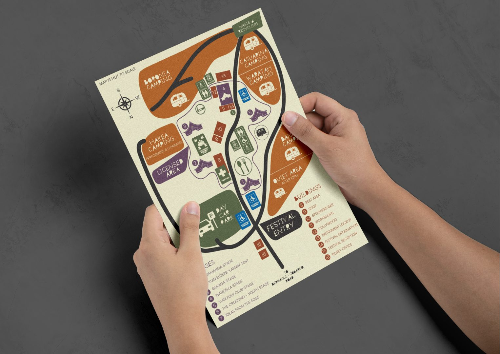
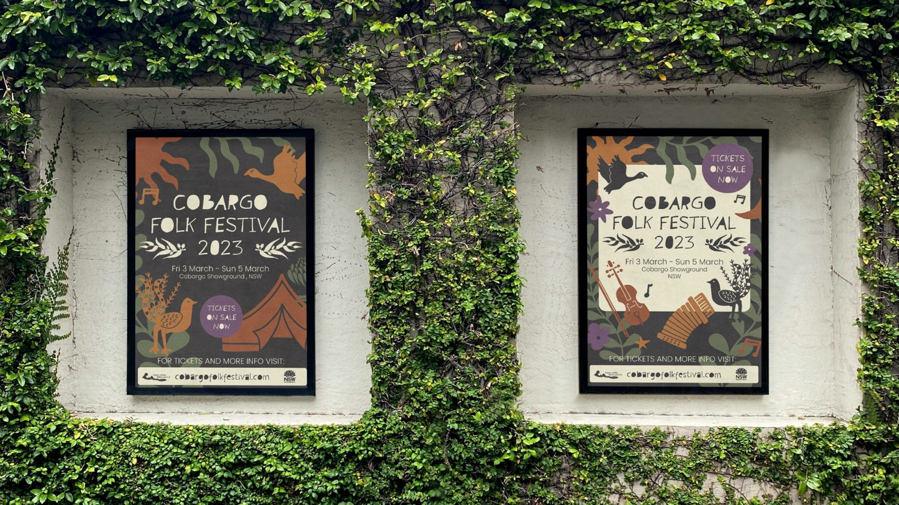

Festival identity, web, merch
Cobargo Folk Festival
A complete identity for the 2023 festival, from tickets to merch.
The 2023 festival ran from 3 to 5 March. It needed one hand-made, local-feeling identity that worked across everything a festival-goer touches, from buying a ticket to finding their way around the site.
What I did
- Festival identity and illustration system
- Website
- Posters, and the “Folk Who Care” stickers and postcards
- Wristbands, festival map and wayfinding
- Merchandise: long-sleeve tees and tote bags






